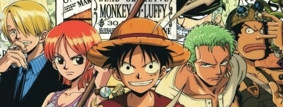
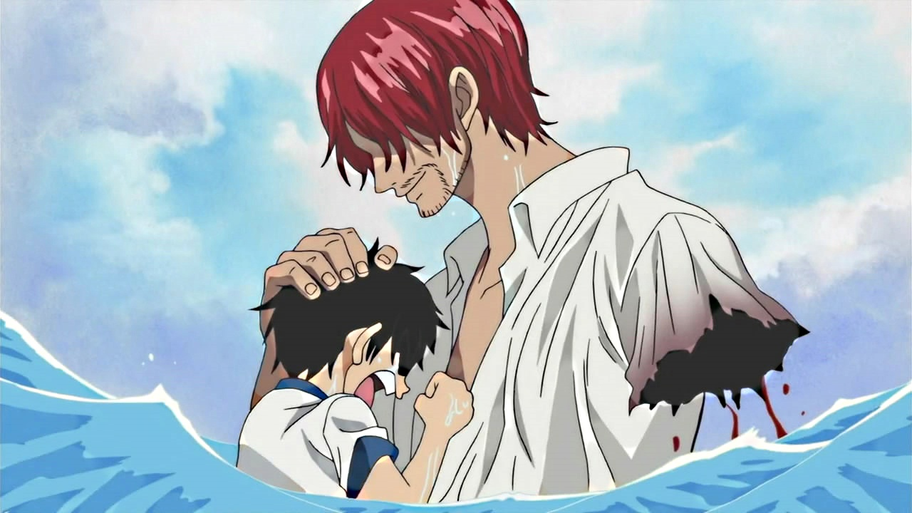

One piece é um mangá e anime dirigido pelo mangaka Eiichiro Oda. Criado
no ano de 1997 continua até os dias
de hoje tendo seus episodios e capitulos atualizados semanalmente. One piece narra as aventuras
de seu
protagonista Monkey D.Luffy
, um jovem pirata que consumiu um fruto do díabo,
esse fruto que deu ao seu
corpo a propiedade de borracha.

Monkey D. Luffy
Luffy um menino extrovertido que tinha o sonho de ser um grande pirata. Quando criança
acidentalmente comeu um
fruto do díabo chamado gomo gomo no mi. Esse fruto pertencia ao
poderoso pirata chamado Shanks, também
conhecido como "o Ruivo".
Após um humano comer um fruto do díabo ele é rejeito pelos mares e nunca mais poderá nadar nas águas
do
oceano. Tempos depois de ingerir a fruta um grupo de piratas da montanha chega ao bar onde Luffy e o
bando
de Shanks estava localizado, os piratas da montanha chegaram querendo saquear o local e o líder
caçoou de
Shanks, que não reagiu em nenhum momento.
Luffy indignado com toda essa cena decide ir atrás dos piratas da montanha e é capturado, Shanks vem
ao seu
resgate e acaba matando um intregante do bando dos piratas da montanha, seu líder foge e aproveita
para
jogar Luffy no mar. Agora um usuário do fruto do diabo Luffy perdeu a habilidade de nadar, enquanto
Luffy se
afoga surge um rei dos mares e Shanks pula ao mar ao resgate do Luffy, assim
perdendo seu braço e iniciando
a maior aposta da sua vida.

O inicio do bando
Shanks entrega seu braço como aposta ao sonho de Luffy e uma aposta a "nova
geracão" de piratas e passa seu
chapéu de palha a Luffy e diz que quando Luffy se tornar um grande pirata ele iria em busca de seu
chapéu
novamente.
Anos se passam Luffy agora com 17 anos vai ao mar dentro de um barril rumo ao seu sonho, após cair
em um
barco pirata ele para na sua primeira ilha onde ele conhece quem irá se tornar o primeiro tripulante
de seu
bando e seu fiel companheiro o espadachim chamado "Roronoa
Zoro". Zoro que estava preso na base da marinha
foi salvo por Luffy que o chamou para ser o primeiro integrante do bando chamado "Chapéu de
palha".
Agora com Zoro, Luffy parte novamente ao mar rumo a grandline, em parada
em uma ilha eles conhecem uma ladra
chamada Nami, uma
ladra que rouba piratas e é uma excelente navegadora, Luffy gosta do seu jeito e a recruta
para o bando, agora o bando é destinto por três tripulantes.
Depois de um tempo de viagem eles fazem uma parada em Baratie, um navio restaurante e eles conhecem
o cozinheiro "Sanji", Luffy chama-o para o bando e Sanji
nega, enquanto Luffy insistia para Sanji entrar no bando, Nami rouba o návio do bando e foge,
durante esse
meio tempo Zoro lutava contra o Dracule Mihawk conhecido como "Olhos de Gavião", MiHawk o
espadachim mais forte do
mundo ganha Zoro e após a derrota Zoro promete que nunca mais vai perder uma batalha enquanto
estiver com
seu capitão.
Sanji aceita entrar no bando e eles partem no mesmo rumo atrás de Nami. Eles chegam em uma ilha
chamada
Arlong Park, eles percebem que essa ilha é controlada pelo pirata Arlong
que é da raça dos homens peixes.
Ouvindo a população local eles descobrem que os habitantes da ilha são escravos de Arlong e que Nami
rouba
os piratas para juntar dinheiro e pagar para o Arlong uma quantia de 200 milhões de berrys para
serem
libertos.
Luffy decide então liberta o povo dessa escravidão e vai contra o bando de Arlong, lutando em prol
da
liberdade de todos. Luffy ganha a batalha e liberta Nami de sua caça insaciável ao dinheiro e ela é
oficialmente a navegadora do bando do chapéu de palha. O bando sai agora da ilha de Arlong em rumo a
Grandline.